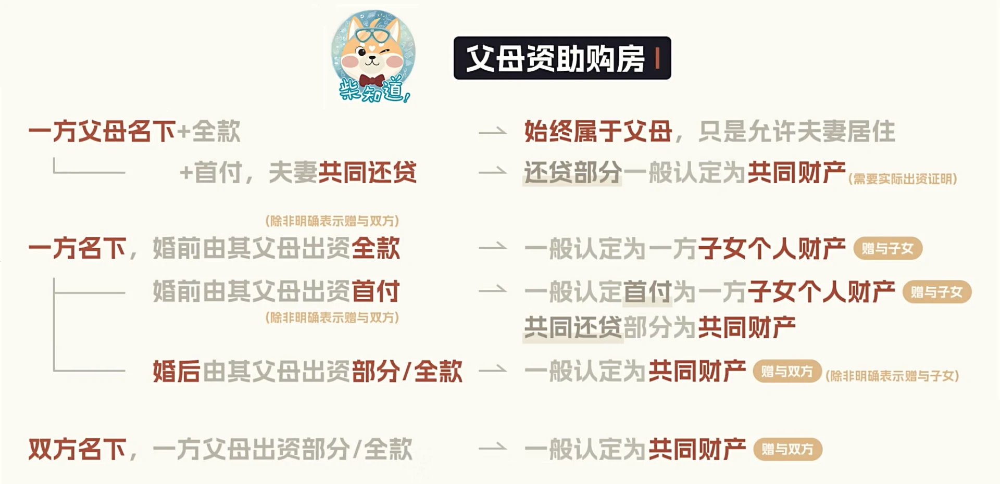

【小美满-卡片】
之前我曾写过恋爱观，那是对个人情感的小小剖白。
今天这篇，写的是「婚育观」，写给我自己，也写给这个时代。
这年头，“婚姻”、“生育”变成了公共舆论场里最容易引发性别对立的火药桶。
所以，我想在这里，认真、平静、真诚讲讲：
作为一个00后男大，我是怎么看待婚姻与生育这件事的。
历历来时路
在开始谈我自己的婚育观之前，我想先带大家回顾一下，从封建礼教到数字时代，中国婚恋观的变迁。
古代：家族本位
#包办婚姻 #门第财产 #女性物化
婚姻完全服从家族利益，遵循“父母之命，媒妁之言”，核心目的是传宗接代与维系社会地位。女性沦为附属品，价值局限于生育和家务。门当户对与经济交换（聘礼/嫁妆）构成婚姻基础，个体情感需求被彻底忽视。
近代：自由启蒙
#城市变革 #离婚合法化
新文化运动催生婚姻自由理念，知识分子群体率先反对包办婚姻，推动离婚/再婚自由合法化。但变革集中于城市，农村仍延续传统模式，呈现明显的城乡二元分化。
改革开放前：生存策略
#政治主导 #有限自主
政治身份与经济条件成为婚恋核心制约，尤其农村女性通过婚姻获取生存资源。虽提倡婚姻自主，但实际选择空间仍受阶级成分、物资配给等制度性限制。
70后：责任本位
#传统守序 #保守伦理
视婚姻为人生必修课，强调家庭责任与社会认可。高度遵从父母意见，重视贞操观念与婚姻忠诚，排斥非传统形式（试婚/闪婚）。生育观传统但受经济压力制约，形成责任意识与现实妥协的矛盾体。
80后：情感转向
#事业平衡 #伦理松动
首代强调“爱情基础”的群体，追求婚姻自主与情感质量。对婚前同居持开放态度，尝试协调事业与家庭关系。传统生育观松动，离婚率上升反映对婚姻瑕疵容忍度降低。
90后：多元迟婚
#延迟婚姻 #成本焦虑
互联网催生高度开放的价值观：接纳LGBTQ+群体、试婚/裸婚等非传统形式。婚龄显著推迟，“懒婚/恐婚”现象凸显经济压力（车房彩礼）。追求情感契合，却因成本困境陷入“向往自由但被动单身”的悖论。
00后：解构重生
#解构传统 #情感个人主义 #个体觉醒
在算法茧房中形成认知分裂：理论上崇尚婚姻崇高性，行为上实践“快餐式恋爱”。传统贞操观与个人主义激烈碰撞，“闪婚、丁克”等人群进一步扩大。同时，“晚婚/不婚”思潮合流，将婚姻重新定义为“人生可选项”，终极目标指向自我实现。
从60后的“抗风险共同体”，到90后的“情感充电站”，再到00后的“自我实现平台”，婚姻制度正在从“必需品”转化为“艺术品”。
婚恋观的变迁史，是一部从工具到主体、回归情感价值、女性平权的觉醒史和斗争史，也是中国社会从集体生存向个体存在的价值跃迁。
不过，当下也应警惕个人主义无限扩张带来的责任内核消解，以及经济压力下的选择扭曲。
对婚姻而言，最理想的未来，或许是在个体自由与关系责任间找到新平衡。既不重蹈“家族绑架”的覆辙，也不堕入原子化深渊。
公元2025年，新婚姻法
其实“新婚姻法”这个词并不准确。更准确的条款，其实是自2021年1月1日起施行的《中华人民共和国民法典》，自2021年1月1日起施行的《最高人民法院关于适用〈中华人民共和国民法典〉婚姻家庭编的解释（一）》，自2024年2月1日起施行的《最高人民法院关于审理涉彩礼纠纷案件适用法律若干问题的规定》（以下简称《规定》），和自2025年2月1日起施行的《最高人民法院关于适用〈中华人民共和国民法典〉婚姻家庭编的解释（二）》等。
婚姻与恋爱最显著的区别之一，就是它必须直面经济问题。恋爱可以纯粹，但婚姻绕不开现实，尤其是财产。
以上提及的法典和解释，重点几乎都落在财产权上，尤其是涉及离婚诉讼中的财产分割。
说白了，法律关心的不是你们爱不爱，而是钱归谁、债归谁。
彩礼 & 嫁妆
根据人民司法杂志社对于《规定》的解读，民法典：
- 强调禁止借婚姻索取财物
- 明确彩礼与恋爱期间一般赠与的区别
- 明确涉彩礼纠纷的诉讼主体
- 完善彩礼返还规则
- 健全嫁妆处理规则
- 确立共同生活认定规则
- 厘清双方过错认定思路
房产
根据B站UP主柴知道（BV1py411i7RJ）的总结，房产问题可大致总结为以下几点：
一方婚前全款购房，归购房方所有。
婚后共同还贷，婚前支付部分仍属个人，婚后部分（共同财产）合理分割。
父母资助购房，可以按下面这张图匹配情况。
 房产证加名，婚前全款房加名视为赠与，成为共同财产。
离婚冷静期
民法典第一千零七十七条 自婚姻登记机关收到离婚登记申请之日起三十日内，任何一方不愿意离婚的，可以向婚姻登记机关撤回离婚登记申请。
前款规定期限届满后三十日内，双方应当亲自到婚姻登记机关申请发给离婚证；未申请的，视为撤回离婚登记申请。
“冷静期”只适用于夫妻双方自愿的协议离婚，对于有家暴情形的，当事人可以向法院提起诉讼，诉讼离婚并没有“冷静期”的规定。
以上便是我搜集到的有关“新婚姻法”的大致内容，接下来，我想围绕这些新的内容谈谈自己的看法。
第一，关于新法的自由裁量权——
新法赋予法官较高的自由裁量权，因此有人质疑它不够完备，容易导致“同案不同判”的现象。
恕我不能同意这种质疑。
新法适用于整个中国大陆，具有全国性的价值引导作用。
但我国幅员辽阔，从江南水乡到西北牧区，风土人情与经济水平千差万别，若强行 “一刀切” ，反而背离实质公平。
未来，完全可以根据新法精神，由地方制定相应的配套性法规，或者由法官结合个案具体情况作出裁判。
退一步讲，即便是在同一个地区内，难道就真的存在“同案”吗？
托尔斯泰说，“幸福的家庭都是相同的，不幸的家庭各有各的不幸”。双方的两个家庭，从初识到结婚再到离婚，所经历的家长里短、经济往来、恩恩怨怨，又该如何量化？若不能量化，又怎能说是“同案”？
“清官难断家务事”是亘古真理。法律给法官一定裁量权，反而是尊重现实的灵活处理。
第二，关于「彩礼」和「嫁妆」——我对这两个父权制名词感到生理不适。
彩礼从来不是祝福，而是男方家庭对子宫的标价；嫁妆也非馈赠，而是女方家庭找回“女儿人质”的赎金。
这套精密的剥削机制，藏着令人齿冷的链条。
贫寒的父母为凑足嫁妆债台高筑，新娘却因“廉价”在夫家沦为二等仆人。
嫁妆箱塞满的绫罗绸缎，反而成了取代新娘自身价值的符号。
更可悲的是，双方父母通过财物角逐，把新婚夫妇变成提线木偶：岳父母增加嫁妆份额维系话语权，公婆克扣彩礼巩固控制权。
作为一个00后，同时作为霉霉的铁杆粉丝，我想，是时候喊出那句“Fuck the Patriarchy”了。我还想在后面补充一句，“Build Our Treasury”。

与其交换「彩礼 / 嫁妆」，不如共筹「结婚准备金」，由两个家庭为一个新家庭提供经济支持。
至于给多少、以什么形式给、在谁名下，这些都应是两个人、两个家庭事先商量好的。
倘若连启动资金都谈不拢，那这段姻缘或许本就该止步于民政局的台阶前。

第三，关于「离婚冷静期」——
有人认为“结婚不需冷静，而离婚反要设卡，宽进严出，不合理”，我仍持相反意见。
事实上，婚姻本就自带漫长的冷静期。
从初遇时的心动到见家长时的忐忑，从同居暴露的生活习惯到筹备婚礼引发的价值观碰撞，多少人早已在数载春秋里见证“磨合”的力量。
法律从不负责保鲜爱情，但必须守护解体后残存的文明。
结不结婚、生不生娃？答：拒绝异化
说了这么多，让我们回到最开始的问题：我到底要不要结婚、生娃呢？
其实，答案早就藏在文章开头的背景音乐《小美满》里：“不去想，不必想，不用急急忙忙说一个答案。”
我确实憧憬婚姻。但这个婚姻，不是房本加名的婚姻，不是为爸妈交差的婚姻，更不是“该结了”的婚姻。
这个婚姻，是爱情本身的婚姻，是细水长流、万物可爱的婚姻。
“小狗在叫 / 树叶会笑 / 风声在呢喃；一觉醒来，床单洒满阳光的温暖。”这是我对婚姻的美好幻想。
但毕竟爱情是奢侈品，不是每个人都有机会遇到那个“我非他/她不可”的灵魂伴侣。如果没有遇到那个Ta，我就不会为了满足世俗的眼光或者某些“人到几岁就该结婚”的声音而结婚。
我并非不怕孤独，但我更害怕和错的人在一起更孤独。
在当今时代，除了结婚，我们还有太多值得去追求的东西。不结婚也可以很好。
我们可以专注于事业，去爬想爬的山、看想看的海；我们可以沉浸在自己的兴趣爱好里，去学摄影、学乐器、写作、跑马拉松，去培养那些让我们发光的事情；我们可以为自己努力存钱，买下喜欢的房子，布置喜欢的家；我们也可以在自己的社交圈子里结识志同道合的朋友，享受独处的安静，也享受聚会的热闹。
人生不该被婚姻定义。人生不是工厂流水线，不需要标准件。
“拒绝异化”不是口号，而是我对自己的交代。
至于新生命的邀请函，我视之为人类最郑重的契约。在我看来，生孩子不是两个人的事情，而是两个家庭，甚至是三代人牵扯在一起的复杂命题。
“父母之爱子，则为之计深远。”听起来简单，做起来却太难。
从怀孕开始，对女性而言，是对身体和心理的巨大挑战。十月怀胎不仅仅是身体的疲惫和不适，还有随之而来的职业中断、身份转变、情绪波动，甚至可能面临外界的不理解和指责。分娩之痛，旁人更是难以感同身受。
孩子出生以后，真正的“战争”才刚刚开始：如何抚养，如何教育，如何在工作和家庭之间寻找平衡？这一切都需要智慧、耐心，还有大量的金钱和时间投入。
我不愿意简单地复制父母对我的教育模式。但问题是：我也没有百分百的把握，知道到底什么才是“真正正确”的教育方式。是该内卷，还是该快乐教育？是该顺应体制，还是该逆流而上？
更现实一点的问题：我有没有能力，带着一个新生命走向更好的人生？我有没有资源，给孩子一个更宽阔的起跑线？
如果答案是“不确定”，那我宁愿不要仓促地下这个决定。
每个孩子都是借由父母降临人间的独立星球。与其说我要不要生孩子，不如说我要不要对一个全新的生命负起百分百的责任。这是一个比“想不想要孩子”更沉重的问题。
当然，无论最后的答案是生还是不生，最重要的，始终是“尊重彼此的意愿，理解对方的顾虑，平等沟通，拒绝盲从。”
不要为了讨好父母而生，不要为了对抗父母而不生，不要为了“传宗接代”的荒诞逻辑而生，更不要为了“摆脱孤独”而把责任加在一个还没来到世界上的孩子身上。
说到底，无论结婚还是生娃，问题的答案都不该是“异化”的产物，而是自我选择的结果，是自我实现的一部分。
婚育，终究只是千万条通往自我实现的路径之一。人应当是自己生命的雕塑家，而非社会模具的石膏浆。
我要的不是别人嘴里的“合适”，我要的，是我自己的“舒服”。“今天就是明天最好的陪伴；笑就好，哭也好，自己就是自己最好的陪伴。”
行文至此，
愿你做的每一个决定，都不是因为别人催促，而是因为你真的愿意；
愿你拥有一段不用委屈自己的感情，或者让自己骄傲的独处；
愿你的人生，永远自由且热烈。
全文完。


发表您的看法